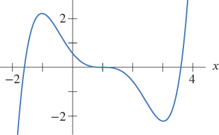

Section 2 Graphical Interpretation
¶Critical points.
A critical point of a function \(f\) is a point where the value of the derivative \(f'\) is either zero or undefined.
In terms of the graph, these correspond to points where the slope is \(0\text{,}\) infinite or undefined.
Critical points of a function are often, though not always, local maxima and minima of the function.
Local maxima and minima.
A local maximum of a function \(f\) is a point \(a\) where the values of the function are larger than the near values.
A local minimum of a function \(f\) is a point \(a\) where the values of the function are smaller than the near values.
Problem 2.1.
Use the graph of \(f\) shown below. The function \(f\) is differentiable everywhere and has three critical points, each at an integer value of \(x\text{.}\)
